Le service Sytadin Mobile propose des informations sur les
conditions de circulation routière sur le réseau des voies rapides d'Ile
de France, le boulevard périphérique et Paris.
Ce service ne doit pas être consulté en conduisant (art.R412-6-1 al.1 du code de la route).
Bonne route !!!
 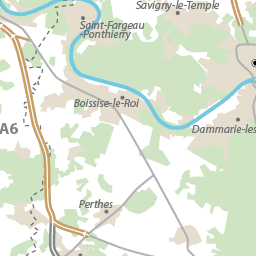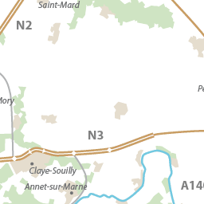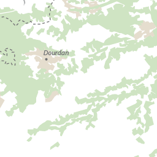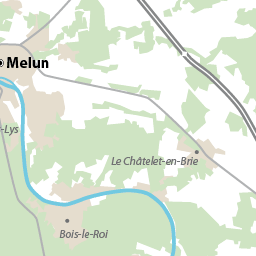
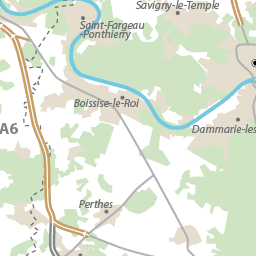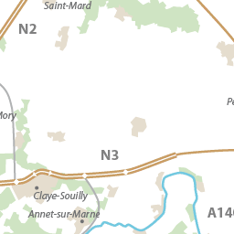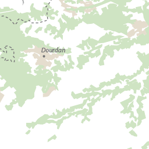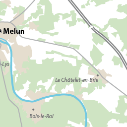
 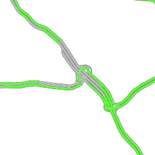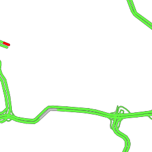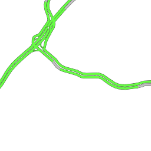
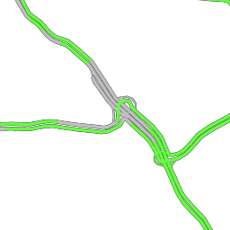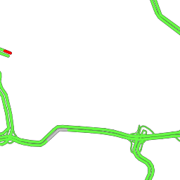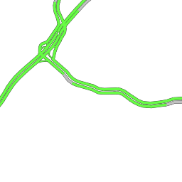 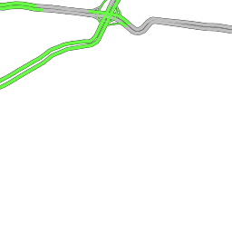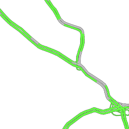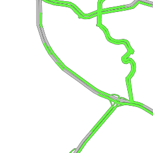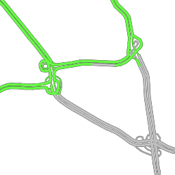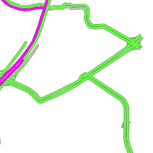
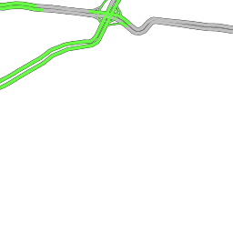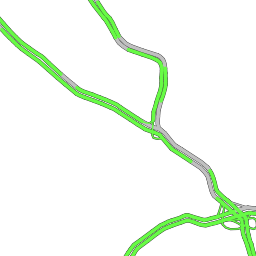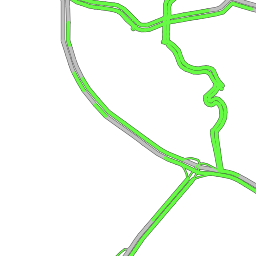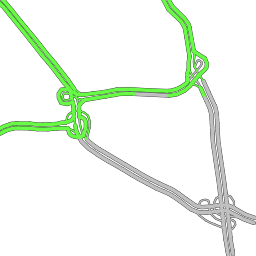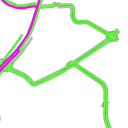 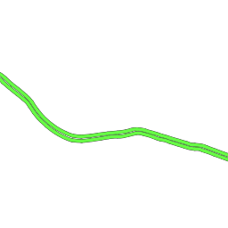
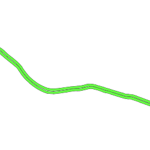 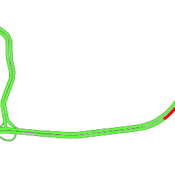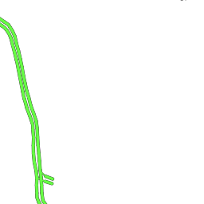
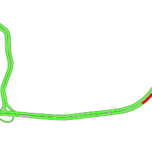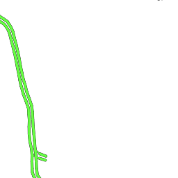